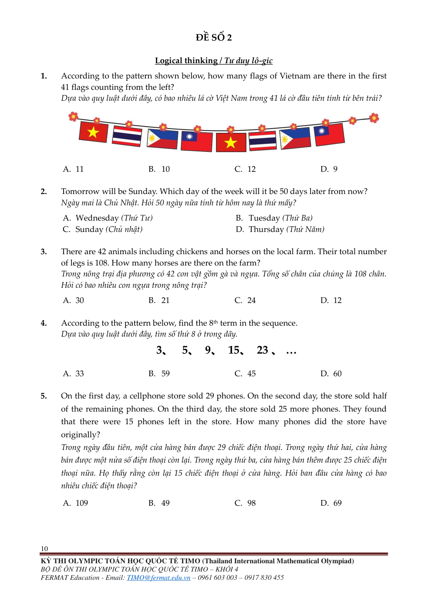
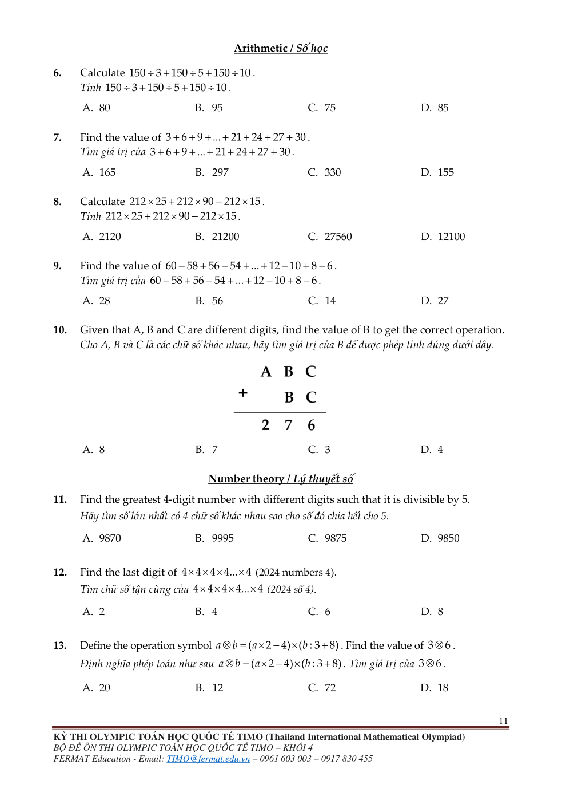
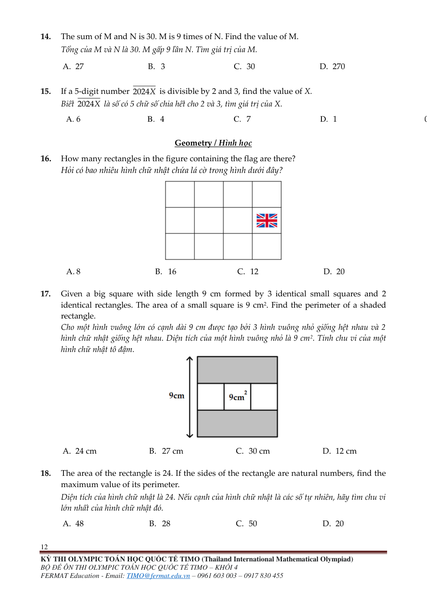
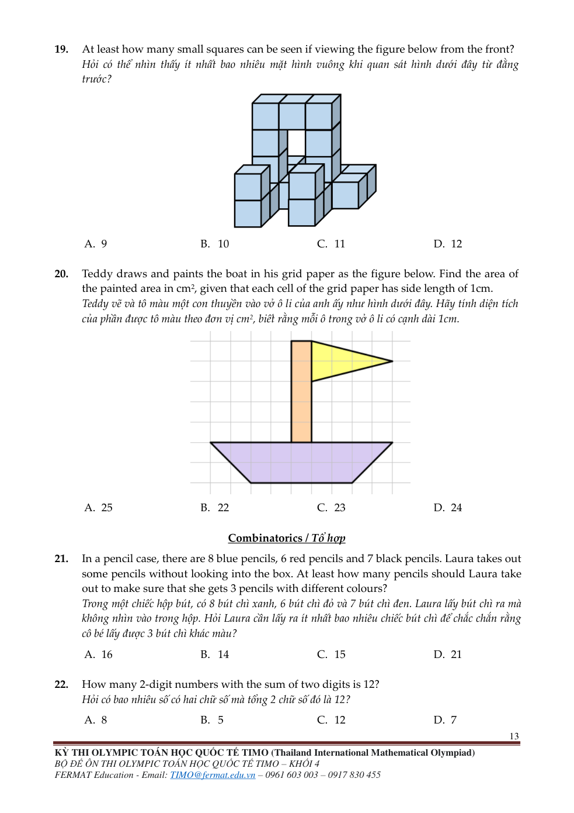
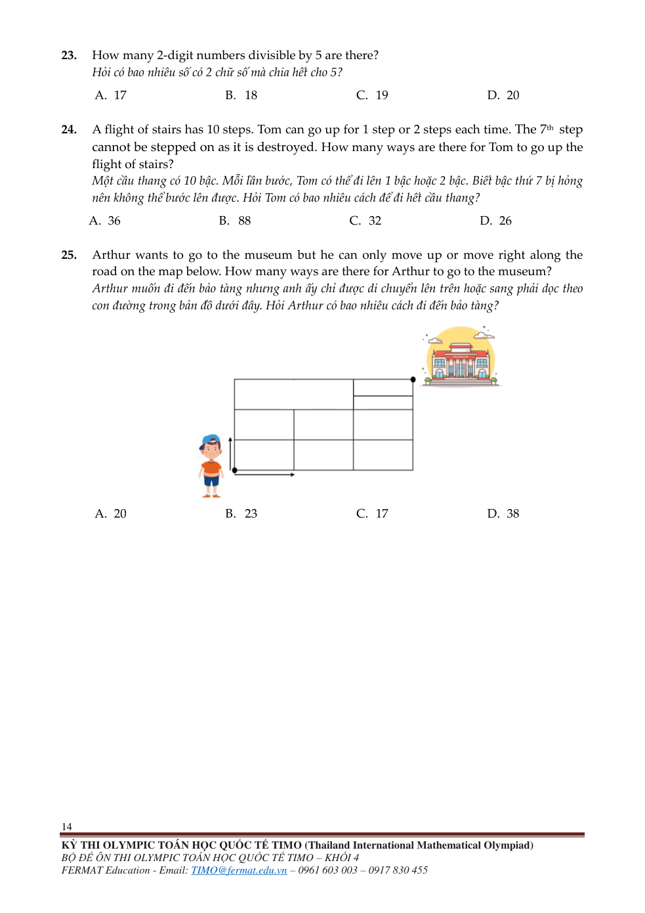

Thi thử thứ Bảy 10/10 : 60 phút. Không đọc lý thuyết hoặc mở lời giải trong thời gian làm. Dùng thời lượng BTC nếu thông báo khác. Các trang bên dưới giữ nguyên 25 câu và mọi hình nguồn.
Đề gốc — đủ 5 trang
Nguồn: TIMOK4.pdf · trang PDF 11 · trang in 10

Nguồn: TIMOK4.pdf · trang PDF 12 · trang in 11

Nguồn: TIMOK4.pdf · trang PDF 13 · trang in 12

Nguồn: TIMOK4.pdf · trang PDF 14 · trang in 13

Nguồn: TIMOK4.pdf · trang PDF 15 · trang in 14

Phiếu trả lời
| Câu | Đáp án của con |
|---|---|
| 1 | |
| 2 | |
| 3 | |
| 4 | |
| 5 | |
| 6 | |
| 7 | |
| 8 | |
| 9 | |
| 10 | |
| 11 | |
| 12 | |
| 13 | |
| 14 | |
| 15 | |
| 16 | |
| 17 | |
| 18 | |
| 19 | |
| 20 | |
| 21 | |
| 22 | |
| 23 | |
| 24 | |
| 25 |